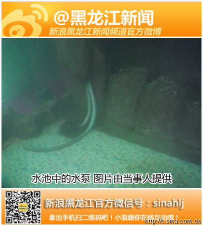
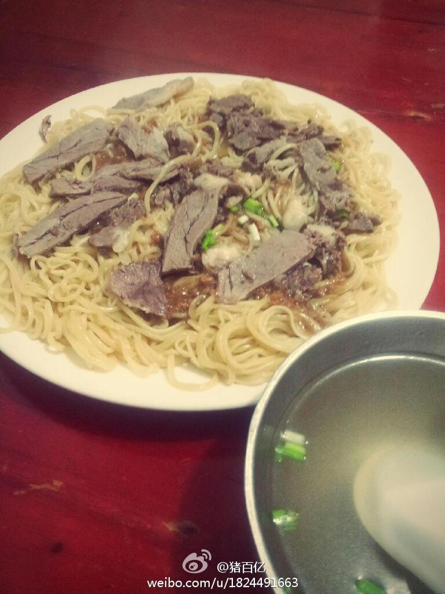

循环水？温泉这东西，在大庆有～确实有，但是有很多假温泉，虽然从地下出的是热水，但是有些温泉的井口出水温度根本就不能满足“温泉”的要求～不知道这家是什么样的@a_2484951175:#关注#【齐齐哈尔鹤鸣湖温泉度假区游客进水池被电晕】“当时觉得腿有点麻，以为是抽筋了，又往水池中走几步后，倒在了水池中。”王女士回忆丈夫在鹤鸣湖温泉度假区时说。经诊断为肺部损伤。鹤鸣湖温泉度假区表示游客遭遇电击是一股“寸劲儿”，可全额赔付医疗费用。详情：网页链接 
本来今天不休息，无奈有事，冒着扣工资的风险请了一天假，昨晚，楼道里有异味儿，打开窗户放味儿，吃完饭准备出去时，关楼道窗户～居然受风了，夜里身上起了一大片疙瘩，挠了一夜，还好没有指甲，凌晨四点多，感觉快不行了，头疼.恶心想上厕所，居然在厕所里睡着了，醒了以后腿麻了！回卧室差点摔倒～
回复@猪百亿:就是消费有点儿高。我这种穷屌丝吃一次就得把一天工资干没了。。。 //@猪百亿:回复@哆啦A多:恩呢，红马对面@百亿摄影-:珠江路上的一家回民面馆，他家牛肉拌面哈尔滨一绝，在喝上一碗热腾腾的牛肉汤，哈哈零下三十度又算什么 